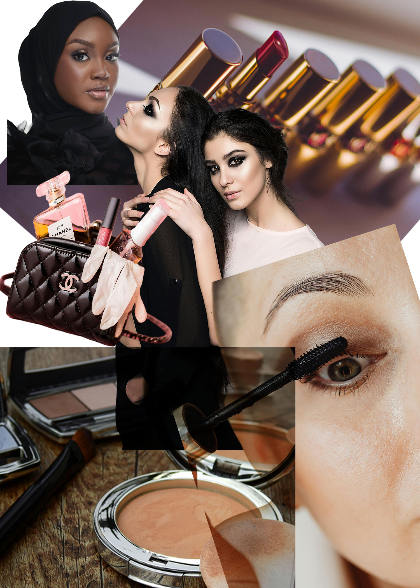
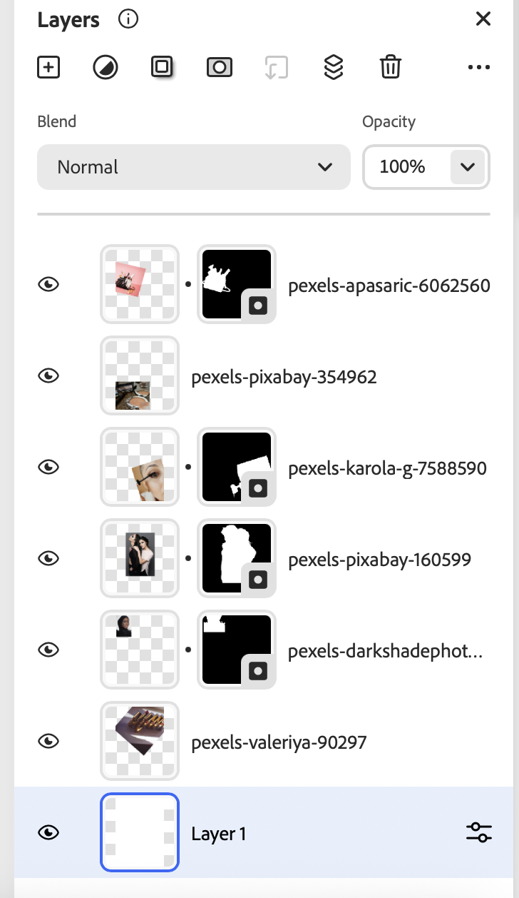

For this photomontage, I explored the theme of beauty standards and how they are constructed through advertising and cosmetic products. I combined images of models with images of makeup and luxury beauty products. This suggests how the beauty industry shapes the way people think about their appearance. By surrounding the faces with cosmetic items, the composition shows beauty as something manufactured and assembled through consumer culture rather than something neutral or natural.
To create the montage, I imported multiple images into Photoshop and used selection tools and layer masks to isolate and combine elements. I layered, resized, and repositioned the images to create contrast, hierarchy, and a collage-like composition. I used non-destructive techniques by working with separate layers and masks instead of erasing. I also applied a blending mode to help integrate the layers visually. The images used were sourced from online public-domain and Creative Commons photography websites.